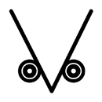

|  |
「 特命！小学生刑事 THIRD EYE 」
永井ミキジ／グラフィックデザイナー Official Site |
| 母子家庭で育ったごく普通の小学4年生、茶倉田 門（ちゃくらだ もん）。しかし、それは表の顔にすぎず、裏の顔は母がパートに出ている間にいくつもの難事件を次々と解決する警視総監任命のスーパーカギっ子小学生刑事だったのだ！ 首にかけられた自宅のカギを額にかざし母を想うと第三の眼が開く！ 必殺技スーパービジョンを使って秘密組織に立ち向かうのだ！ 急げ！ 母がパートから家に戻ってくる前に！ 戦え!! 茶倉田 門!!! |
|